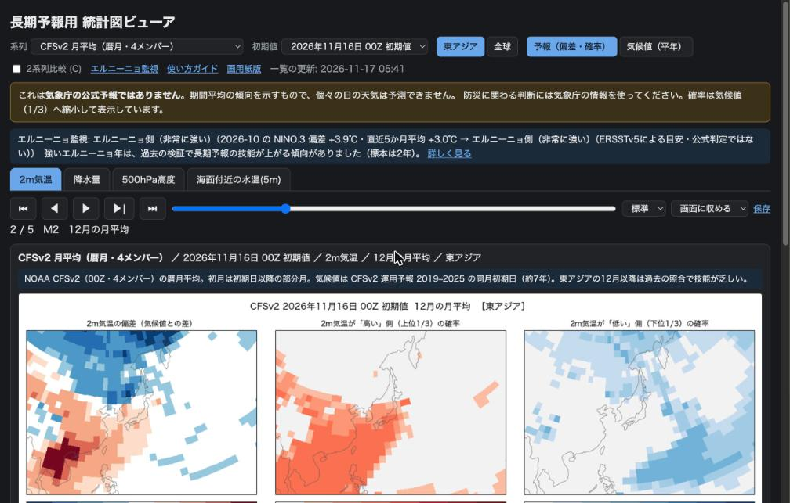
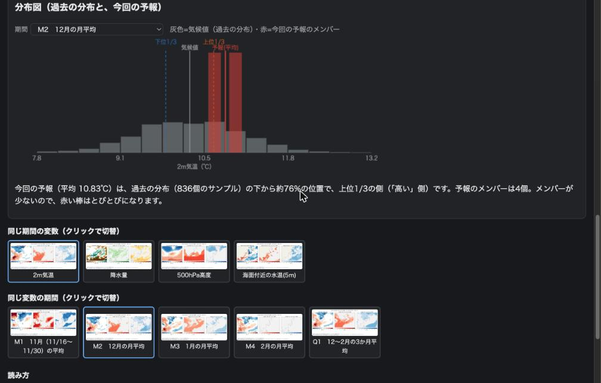

操作マニュアル（画面の使い方）
このサイトの画面の操作方法をまとめた文書です。図の意味や数字の作り方は、使い方ガイドを読んでください。
画面は、パソコンでもスマホでも使えます（スマホでは、一部の表が横にスクロールします）。
まず試すなら: 「標準表示」を開いて、上の「変数」タブと、図の上の |◀ ▶| ボタンを押してみてください。それだけで、変数と期間が切り替わります。
1 画面の種類
| 画面 | 何ができるか | どこから開くか |
|---|---|---|
| 標準表示 | 図を1枚ずつ（または2枚並べて）見る。地点の数値・分布図もここ | 最初に開く画面（index.html） |
| 画用紙版 | 変数×期間の図を、一度に並べて見る | 標準表示の上の「画用紙版」 |
| 気象庁形式の図 | 流線関数・速度ポテンシャル・OLR・海面水温の予報を、気象庁の「速報」と同じ表示形式で、変数を縦に並べて見る | 標準表示の上の「気象庁形式の図」 |
| テレコネクション | PNA・WP・EU 指数の予報（期間ごとの表と棒グラフ） | 標準表示の上の「テレコネクション」 |
| エルニーニョ監視 | エルニーニョの現状と、半年先までの予測 | 標準表示の上の「エルニーニョ監視」 |
| 使い方ガイド | 図の読み方・データ・統計の作り方・精度の説明（初心者向け） | 上の「使い方ガイド」 |
| 操作マニュアル | この文書 | 上の「操作マニュアル」 |
2 標準表示の使い方

2-1 画面の構成（上から順に）
- 系列: どのモデル・どの平均かを選びます（CFSv2 週平均 / ラグ18メンバー / 月平均。ローカル版では JMA CPS4 も。公開サイトには JMA CPS4 は載せていません）。
- 初期値: 計算を始めた日です。新しい順に並びます。
- 領域ボタン: 「東アジア」と「全球」。流線関数・速度ポテンシャル・OLR・海面水温では、「気象庁形式（60°S–60°N）」も選べます（気象庁の速報と同じ表示形式の予報図。図がある変数・期間だけ、ボタンが出ます）。
- 表示ボタン: 「予報（偏差・確率）」と「気候値（平年）」を切り替えます（3章）。
- 2系列比較: チェックを入れると、右にもう1つの図を並べます（5章）。
- エルニーニョ監視の1行: 現在の状態の目安。「詳しく見る」でエルニーニョ監視のページへ。
- 変数タブ: 2m気温・降水量・500hPa高度・海面水温に加え、流線関数（850・200hPa）・速度ポテンシャル（200hPa）・OLR（月平均の系列のみ。週平均の系列にはありません）。系列によって、出るタブが違います。
- 期間の操作: ⏮ |◀（1コマ戻る） ▶（再生） ▶|（1コマ進む） ⏭、スライダー、再生の速さ、画像の大きさ、「保存」（画像をダウンロード）。
- 図: 3つの地図（偏差・高い側の確率・低い側の確率）。
- 地点の数値（折りたたみ）: 4章。
- 同じ期間の変数／同じ変数の期間: 小さい図の一覧。クリックで切り替わります。
2-2 基本の操作
| やりたいこと | 操作 | ||
|---|---|---|---|
| 変数を変える | 変数タブをクリック、またはキーの ↑ ↓ | ||
| 期間を変える | ◀（1コマ戻る）・▶ | （1コマ進む）ボタン、スライダー、またはキーの ← → | |
| 期間を自動で順に見る | ▶（再生）ボタン、またはスペースキー。速さは「遅い／標準／速い」 | ||
| 領域を変える | 「東アジア」「全球」ボタン、またはキーの R | ||
| 古い（新しい）初期値の図を見る | 「初期値」の選択、またはキーの [（古い）と ]（新しい） | ||
| 図を大きく／小さく | 「画面に収める／幅いっぱい／80%」 | ||
| 図をファイルに保存 | 図の上の「保存」 |
ヒント:
[]で初期値を前後に動かすと、「予報が変わったか（傾向が安定しているか）」を、すばやく確かめられます。
2-3 キーボード操作の一覧
| キー | 動作 |
|---|---|
| ← → | 期間を前・後へ |
| ↑ ↓ | 変数を前・後へ |
[ / ] | 初期値を古い・新しい方へ |
| R | 領域（東アジア／全球）を切り替え |
| C | 2系列比較のオン・オフ |
| スペース | 再生・停止 |
| Home / End | 最初・最後の期間へ |
2-4 「気象庁形式の図」ページ
- 標準表示の上の「気象庁形式の図」を開くと、標準表示と同じ画面・同じ操作で、気象庁の速報と同じ形式の予報図だけを見られます。
- 変数タブ: 流線関数（850・200hPa）・速度ポテンシャル（複合図）・OLR・海面水温（海面水温は月平均の系列のみ）。
- 期間の操作: ⏮ |◀ ▶ ▶| ⏭・スライダー・再生。キーも標準表示と同じです（← → 期間、↑ ↓ 変数、[ ] 初期値、Space 再生）。
- 下のサムネイルで、同じ期間の変数・同じ変数の期間を切り替えられます。
- 表示の切替（左上のボタン）: 「コマ送り（標準表示と同じ）」と「一覧（変数を縦に並べる）」。一覧にすると、選んだ期間の流線関数 200hPa → 850hPa → 速度ポテンシャルの複合図 → OLR → 海面水温が、縦に並びます（期間の選択・|◀ ▶|・大きさの選択つき。キーの ← → でも期間を切り替えられます）。選んだ表示は、次に開いたときも覚えています。
- 領域・表示（予報／気候値）・2系列比較・地点の数値は、このページにはありません（標準表示で使います）。
- 気象庁の図は実況の平年差ですが、この図は予報で、偏差の基準はモデル自身の気候値です。
2-5 「テレコネクション」ページ
- 上部の「テレコネクション」を開くと、PNA・WP・EU 指数の予報が、期間ごとの表で出ます。
- 系列・初期値を選びます。表の列は、期間・予報（gpm）・標準化値・標準化値の棒（点は各メンバー・灰色の帯は±1）・気候値の標準偏差・位置（%）です。
- 棒が右（赤）なら正、左（青）なら負。±1 を超えると、ふだんより目立つ状態です。
- NOAA/CPC の公式の指数ではない簡易版です。
3 「気候値（平年）」の図を見る
- 上の表示ボタンで「気候値（平年）」を押します。
- 図が、次の4枚組に変わります。
| 枚 | 見えるもの |
|---|---|
| 1枚目 | 気候値（平年）。過去の同じ時期の平均 |
| 2枚目 | 下位1/3の境目（平年との差）。これより下なら「低い」側 |
| 3枚目 | 上位1/3の境目（平年との差）。これより上なら「高い」側 |
| 4枚目 | 境目の幅。年々のばらつきの目安 |
- 変数・期間・領域・初期値は、予報の図と同じ操作で切り替えられます。
- 最新の初期日だけ、気候値の図があります。古い初期日では、「気候値の図はありません」と出ます。
- 予報の図に戻すには、「予報（偏差・確率）」を押します。
4 「地点の数値」の使い方

地図の色では読み取りにくい具体的な数字を、地点を選んで見られます。
4-1 開き方と地点の選び方
- 図の下の「地点の数値」をクリックして開きます（▼が付きます）。
- 地点の選択で、都市を選びます（札幌・東京・大阪・福岡・那覇・ソウル・北京・上海・台北…）。
- 都市にない場所は、「（緯度・経度を指定）」を選ぶか、緯度と経度（東経）の欄に数字を入れます（例: 緯度 35.7・経度 139.7）。
- 範囲は、東アジア（北緯8〜62°・東経95〜175°）です。範囲外では「範囲外です」と出ます。
- 西経は使えません。東経で入れてください。
4-2 表の見方
| 列 | 意味 |
|---|---|
| 期間 | 平均した期間。いま図に出ている期間は、青くハイライトされます |
| 気候値 | 過去の同じ時期の平均（平年） |
| 下位1/3の境目 | これを下回ると「低い」側 |
| 上位1/3の境目 | これを上回ると「高い」側 |
| 今回の予報 | 予報メンバーの平均 |
| 偏差 | 今回の予報 − 気候値 |
| 低い側の確率／高い側の確率 | 図と同じ（観測との照合で控えめにした値） |
読み方の例（東京付近・12月の月平均気温）: 気候値 10.3℃、上位1/3の境目 10.6℃、今回の予報 10.8℃。
→ 予報が境目（10.6℃）を超えているので「高い」側で、確率は54%。
4-3 注意
- 値は、約250km四方の格子の平均（海を含む）です。気象庁の観測所の平年値とは別物です。
- 変数は、いま選んでいる変数（上のタブ）の値です。変数を変えると、表も変わります。
- 流線関数・速度ポテンシャル・OLR は、確率が未補正です（表の下に注記が出ます）。
- 「ラグ18メンバー」の系列では、地点の数値は出ません。「CFSv2 週平均（4メンバー）」など、他の系列を選んでください。
- 気候値の図と同じく、最新の初期日だけ表示されます。
5 「分布図」の使い方

「地点の数値」の下に出ます。過去の分布と、今回の予報が、どれくらい離れているかを、目で確かめられます。
5-1 見方
- 灰色の棒: 過去の分布（気候値）。棒が高いほど、その値がよく出た。
- 赤い棒: 今回の予報のメンバー。
- 青の点線: 下位1/3の境目。橙の点線: 上位1/3の境目。
- 灰色の線: 気候値（平均）。赤の太線: 予報の平均。
- 下の文: 「予報の平均が、過去の分布の下から何%の位置か」。約67%を超えると「高い」側、33%を下回ると「低い」側です。
確率の意味が分かります: 橙の点線より右にある赤い棒の割合が、「高い側の確率」です。
5-2 操作
- 期間の選択で、別の期間の分布を見られます。
- 初めは、図に出ている期間に自動で合います。
- 自分で選ぶと、その選択が保たれます（変数や系列を変えると、また自動に戻ります）。
- 地点は、「地点の数値」で選んだものと同じです。
5-3 注意
- メンバーが少ない系列（CFSv2 は4つ）では、赤い棒がとびとびになります。
- 予報（平均）の線が、灰色の分布から大きく外れているときは、平年から大きくずれた予報です。
6 2系列を並べて比べる
- 上の「2系列比較（C）」にチェックを入れる（またはキーの C）。
- 右に、もう1つの図が出ます。右の系列・初期値を、右の行で選びます（初めは CFS と CPS4 の組み合わせ。公開サイトでは CFS どうし）。
- 「期間・変数・領域を左に合わせる」にチェックがあると、左の操作に右が自動でついてきます。
- 期間は、「表示される月の範囲が同じもの」に合わせます（例: CFSv2 の月2と CPS4 の L2 は、どちらも12月）。
- 同じ時期を2つのモデルで比べて、傾向が一致しているかを確かめます。
7 画用紙版の使い方
- 変数（行）×期間（列）の図を、一度に並べて見られます。全体の傾向をつかむのに向きます。
- 上の 系列・初期値・領域・表示（予報／気候値） を選びます。大きさのスライダーで、図の大きさを変えます。
- 図をクリックすると、その図を標準表示で開きます（系列・初期値・変数・期間・領域が引き継がれます）。
8 エルニーニョ監視ページの使い方
- 上から: 現在の状態（観測からの目安）→ 観測の推移（NINO.3・NINO.3.4・RONI）→ 予測（CPS4。ローカル版のみ。公開サイトには出ません）→ 読み方。
- 基準日の選択で、過去の基準日の予測を見られます。
- 表の列: 月・平均偏差・10〜90%の範囲・エルニーニョ側／ラニーニャ側のメンバーの割合・過去28年の予測技能（ACC）。
- NINO.3 は気象庁の指標、NINO.3.4 は NOAA の従来の ONI 方式です。RONI（NOAA が2026年2月から公式に使う指標）は、観測の図の下の段に青の破線で重ねています。
- 観測と予測の図は、気象庁の図ではなく、このサイトが NOAA・CPS4 のデータから計算したものです。「この図の作り方」の欄（折りたたみ）に、作り方の説明があります。数値は、気象庁の公式値と最大0.5℃ほど違うことがあります。
- 公式な判断は、気象庁の「エルニーニョ監視速報」（毎月10日ごろ発表）を見てください。
9 リンクで同じ図を共有する（URL）
画面の状態は、アドレスの # 以降に自動で保存されます。アドレスをコピーして送ると、同じ図が開きます。ブックマークにも使えます。
| 項目 | 意味 | 値の例 |
|---|---|---|
s | 系列 | cfs_week（週平均）・cfs_week_lag（ラグ）・cfs_month（月平均）・cps4 |
i | 初期値 | 20261116 |
v | 変数 | t2m（気温）・prate（降水）・z500・sst・pot5 |
p | 期間 | W1〜W4・M1〜M4・Q1・L1〜 |
r | 領域 | asia・global |
m | 表示 | clim（気候値）。無ければ予報 |
c | 2系列比較 | 1（オン）。右は s2・i2・v2・p2・r2 |
例: 東アジアの12月の気温の気候値 → index.html#s=cfs_month&v=t2m&p=M2&r=asia&m=clim
10 困ったとき
| 症状 | 対処 |
|---|---|
| 図が出ない（「画像を読み込めませんでした」） | ページを再読み込み（Ctrl+R / ⌘+R）。しばらく待ってからもう一度 |
| 「この組み合わせの図はありません」 | その系列・初期値に、選んだ変数・期間の図がありません。別の変数・期間を選ぶ |
| 「気候値の図はありません」 | 気候値の図は最新の初期日だけです。初期値を最新に |
| 地点の数値が出ない | ①「地点の数値」を開いているか ②ラグ18メンバー版ではないか ③最新の初期日か、を確認 |
| 「範囲外」と出る | 東アジア（北緯8〜62°・東経95〜175°）の地点を指定 |
| 初期値が古い | 更新は毎週金曜 10:00（CFS）と毎月15日（CPS4）。一覧の更新時刻が画面の上に出ています |
| キーが効かない | 入力欄や選択欄にカーソルがあると、一部のキーが効きません。画面の余白をクリックしてから押す |
11 自分のパソコンで動かすとき（上級者向け）
- 図を新しく作った後（
pipeline.pyを使った場合は自動で実行されるので不要）は、プロジェクトのフォルダでpython make_web.pyを実行する（図の一覧web/manifest.jsonと、各ガイドのページを作る）。見るだけなら省略できる。 - プロジェクト直下で
python -m http.server 8793 --bind 127.0.0.1を実行し、ブラウザでhttp://127.0.0.1:8793/web/を開く。 - ローカルの画面では、エルニーニョ監視のページに気象庁の公式の見通し（ローカルのみ）も出ます。公開サイトには載りません。
- 詳しい運用（自動実行・校正・公開）は long-range-charts.md を参照。